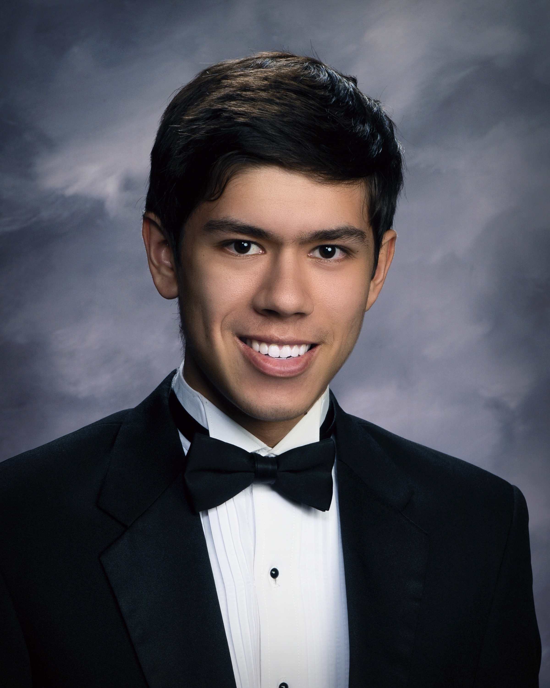

Eric Honer

Education
UC Santa Cruz
Computer Science B.S.
Expected Graduation: June 2026
GPA: 3.51
Concentrations: Artificial Intelligence, Machine Learning, Deep Learning, Data Science
College Coursework: Python Programming, C, Calculus I, II, and III, Discrete Mathematics, Probability and Stats, Linear Algebra, Machine Learning, Computer Networking
- Personal Coursework:
Skills
Programming: Python, C, SQL, web scraping, asynchronous development, Web Development with Flask and HTML, CSS, Tkinter GUI Development, Numpy, Pandas, Matplotlib, Seaborn, Scikit-learn, Tensorflow, PyTorch
Additional tech skills: github, shell scripting
Soft skills: great communication skills, punctuality, working in a team, time management
Achievements
- Eagle Scout from troop 394
- Skills gained: Leadership, time management, organization
- Chess USCF rating: 1850
- Skills gained: critical thinking, intuition
- UCSC ACM Hacks 2024 winner
- Skills gained: teamwork, time management, adaptability
Major Projects/Current work
- UCSC Basic Needs assistance app
- A team project designed to help students navigate the cluttered basic needs system. Using React, Tailwind, and Next.js, this app displays each facility with their hours, products, location, and a question/recommendation section
- Two-player chess application
- A personal project allowing two players to play a game of chess using pygame
- Brain-inspired Neural Network lab
- Research lab at UCSC under assistant professor Jason Eshraghian focused on building more computationally efficient deep-learning models using snntorch. Currently using this library to build a hand gesture recognition application
Contact Me